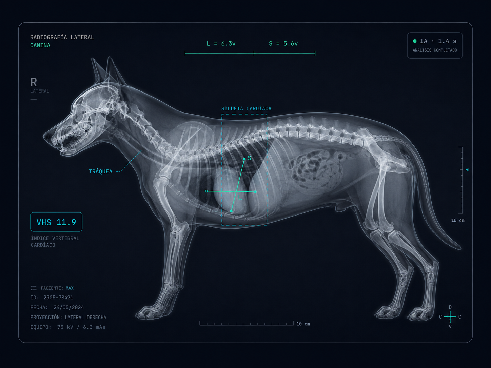

RADIOGRAFÍA LATERAL
CANINA
IA · 1.4 s
R
LATERAL
L = 6.3v S = 5.6v
SILUETA CARDÍACA · 0.97
TRÁQUEA ↑
PATRÓN PULMONAR
VHS 11.9
REF. DEMO ≤ 10.7
Imagen ilustrativa para el componente de producto VetVision AI.